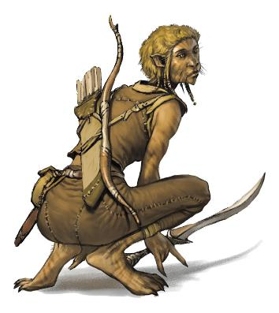

作者：Keith Baker
译者：Vol’tsen（君士坦丁XI）
在5e中已经有超过50个官方可玩种族，而这还不包括变体variants和血脉lineages，更别提第三方和房规了。艾伯伦已经为常见的种族——精灵、侏儒、兽人、地精、矮人，甚至还有豺狼人gnoll——划定了位置。但兔人harengon该怎么适应艾伯伦呢？天狗kenku和歌利亚goliath呢？“这个种族该怎么适应艾伯伦？”是我最常被想为故事加入新怪物的DM和想扮演新种族的玩家问到的问题。
艾伯伦已经为几乎所有事物都留了位置，但怎样才能把故事讲好呢？如果一个玩家想车枭人owlin卡，你可以说在埃鲁登原野有一个未知的枭人国家——或者，这个角色可以是一名大法师的被魔法转变成枭人的猫头鹰魔宠。你是想加入一整个由这个种族组成的国家，还是只想给一名PC的特异之处以合理解释？在帮助玩家将角色灵感融入艾伯伦时，我首先会考虑让世设的元素和他们的故事都显重要。艾伯伦什么都有，但我不想强行添加一些不会为我想讲述的故事添加有吸引力的故事线的东西。所以，我的首要目标就是辨别我的玩家想讲什么故事，它又该如何融入进我的故事中。让我们来看以下三个对于“你为什么要扮演这个种族？”这一问题最通常的答案。
很多时候，问题的答案是“我想让我的角色适配这些规则。”为什么你不扮演化兽者shifter，而是扮演斑猫人tabaxi？有时答案与种族的背景故事无关；斑猫人只是拥有猫之迅捷Feline Agility特性，而它恰好与玩家的游侠新构筑完美吻合。这并没有什么问题！你只是并不需要在世设中加入一个全新的文化——给予他们领土、考虑他们在历史和当前的政治平衡中的地位——却仅仅是为了让一个游侠使用猫之迅捷特性。以下是一些处理方式。
你可以将任何种族数据换皮，将它们描述成艾伯伦现有的任意种族。如果那个玩家想要斑猫人特性但不介意作为化兽者文化的一份子，你大可以说那个PC是个化兽者。在你的故事中，其可以是一个不同寻常的迅捷化兽者；玩家甚至可以在使用猫之迅捷特性时将其描述为化形，尽管这并不会带来任何化形特性在规则上的优势或劣势。玩家得到了他们想要的能力，但在你的故事中，他们仍是艾伯伦已有种族的一部分。
如果玩家不想让他们的角色加入现有的文化或社群，你可以令其作为一个特殊的个体：角色是世上唯一的斑猫人。也许其受哀伤咏叹影响而变异了，或者其是异变魔daelkyr、织肉者蒙丹Mordain the Fleshweaver或瓦塔利斯实验的造物。其能力也可以来源于被至高妖精诅咒，或暴露在显能区能量下。同样，一个枭人角色过去也可能曾是于阿卡尼克斯任教的大法师的魔宠；在法师去世时，其最后行动就是给予自己忠心耿耿的魔宠以自由身与类人形态。在这些例子里，玩家在无需DM添加新文化的情况下得到了他们想要的种族特性。这条道路给予了角色探寻他们与创造者的关系的机会：为什么织肉者蒙丹想要创造一个斑猫人？角色曾是他的猫魔宠吗？角色是从蒙丹手中逃了出来，还是他们被放生野外，他们又是否知道原因？
将角色本身作为一个独立种族的缺点在于他们没有机会与他们种族的其他成员接触。如果有玩家想让其角色与其他的同种生物产生联系，却又不想让他们的文化在世上具有重要地位，你就可以选择微型集体的路线。或许有一整个村子的居民都随其村子被哀伤咏叹捕获而转化成了斑猫人。或许瓦塔利斯家族在终末战争期间魔育了一批歌利亚超级士兵；虽然角色从中逃脱了，但其多数族人仍位于一个瓦塔利斯家族秘密设施中。或者世上可能只有一打天狗——他们是被称作遗忘王子the Forgotten Prince的至高妖精的仆人，作为他们罪行的惩罚，他们被王子剥夺了声音并被放逐到了艾伯伦。
一个微型种族的有趣之处在于它直接给予了你可以运用在游戏中的情节钩子。如果你是十二个天狗中的一员，那么你将认识他们所有人——你们是团结互助，还是互相竞争？你是在对那个将你和你的同伙出卖给王子的天狗寻求复仇，还是说你就是那个应该对大家被流放而负责的叛徒？同样的，如果你是一名歌利亚超级士兵，你会在其他歌利亚恳求你帮忙从瓦塔利斯设施中救出族人时有何反应？
作为这样的微型集体的一员意味着你没有哪个国家或者文化可以依赖，但你种族中的每一个成员都是重要的。如果龟人在拉扎尔有一个公国，那你仅仅是众多龟人中的一个。但如果你和你的三个兄弟是被哀伤咏叹转化成龟人的乌龟，那么你们就是世上仅有的四个龟人，这会让你们变得引人注目！
|
马戏班里的猫？Cats at the Circus? 镇上的阴影狂欢节已经开始了！开幕式上的观众们惊叹于这些由具有猫之优雅与特征的演员带来的杂技表演！从远处看去，这些演员们可能会被错认为化兽者，但从前排看去，这些非凡的健儿比平常那些毛茸茸的伙计们要更像猫。我们设法与剧团经理哈拉尔·d·索兰尼取得了联系，他向我们介绍这些演员们真是如此神奇——在哀伤之日当天，他们的精灵杂技班就在赛尔，但他们并未丧命，而是在迷雾的作用下产生了变异。我们希望这些演员们能身怀九命，毕竟他们已经用掉一条了嘛！ |

经常有玩家说：“我喜欢在另一个世设里扮演这个角色，我也想在艾伯伦里试试看。”他们总是扮演斑猫人，因为其只想再次反复扮演同一角色。在这种情况下，玩家通常会对斑猫人是什么有一个确定的想法，并且不希望DM改变其文化风俗以适应世设。他们想要用像往常一样的方式扮演这个角色。他们不想扮演考提阿尔Qaltiar（译注：精灵语“破戒broken
oath”，KB小说中出现的卓尔氏族，详见《破碎之地the
Shattered Land》）氏族的卓尔，而是想扮演来自被遗忘国度的卓尔游侠。
对我而言，我通常会回答：“好，你的角色从另一个世界来到了艾伯伦。”远行者背景可以很好的体现这一点，因为它代表了没有人曾经见过你这样的人。这并不意味着你需要把跨世设旅行变成你团里司空见惯的事情。这名角色可以是被哀伤咏叹、巨龙预言或者千年一遇的位面碰撞带到艾伯伦的幸运儿。其也可以和吉斯人gith一样——是不知道怎么活到现在的旧现实的残片（译注：见KB博客https://keith-baker.com/short-take-gith-in-eberron/）。无论用哪种方法，玩家都能照其想要的方式扮演这个角色，而DM也不必为了融入这个角色而让世设往奇怪的形状偏离。
这种情况下，要让玩家明白其角色在这个世界里是孤独的：其扮演的来自的费伦的卓尔游侠可以谈论其在被遗忘国度的文化，但没人能理解其到底在说什么，其在艾伯伦能见到的卓尔精灵只有像树荫之民Umbragen（译注：于《龙晶传奇》中出场过，同样是艾伯伦的卓尔氏族，详见龙杂#330-https://www.goddessfantasy.net/bbs/index.php?topic=24623.0）以及考提阿尔之流。通常这不成问题，玩家会更专注于角色的经历而非其文化。另一方面，如果并非如此……
有时不仅仅是一个特定的玩家想要扮演来自一个特别种族的单一角色。玩家和DM都有可能会说：“我热爱这个种族的故事，我想让它在世设里具有一个举足轻重的地位。”有什么办法可以在不把整个世设推翻重写的前提下达成此目的呢？
你曾经使用过卓姆Droaam的泽尼尔豺狼人Znir Gnolls吗？你有使用的计划吗？如果皆非，你可以说泽尼尔群落Znir Pact的建立者是斑猫人，而非豺狼人。或者，若你不喜欢地精，你可以说达坎帝国是一个歌利亚帝国，其后裔皆为歌利亚氏族。这使得你可以利用已有的设定与关系，仅需小小的改变其内容重心focus。世设不会因此而变成“厨房水槽”（译注：厨房水槽式设计，指尽可能多的往世设里添加元素，试图涵盖所有需求的设计思路），因为你在往里加东西前已经删掉了另一些。
在将4e的龙裔加入世设时，我们用了“他们一直都在那，你只是没注意到”的方法。在3e中，世设已经确定了夸巴拉的爬行类人生物的存在以及他们与殖民者的矛盾。所以我们只是说：“我们之前提及了蜥蜴人，但夸巴拉也有龙裔的存在；人类只是没能辨认出他们的区别。”然后我们又加入了更久远的历史，描述了龙裔曾如何建立一个囊括塔兰塔平原的帝国，又是如何与达坎人战斗，但最后被迫撤退到夸巴拉的要塞里与毒暮部落相争。这使得玩家可以扮演一个有家可归的龙裔，而无需重绘地图或改变历史。龙裔一直都在那里，但他们属于一个与五国接触甚少的孤立文化。
地图上有很多能服务于这种方法的与世隔绝的地点。完全有可能有一个与化兽者共同居住在齐云森林深处的斑猫人部落，就好像夸巴拉的蜥蜴人和龙裔一样；由DM决定他们只是一个人类尚未遭遇的独特文化，还是德鲁伊教派的一份子。拉扎尔邦联也可以如法炮制——如果你的战役内没人曾遇见穿云舰队，你就可以宣称他们都是歌利亚（而且一直都是）。他们太过罕见，以至于五国的人民未曾知晓他们，而他们也并未在终末战争中有多大影响，但他们还是有自己的岛屿，自己的舰队，而且在众公国principalities内广为人知。希恩德瑞克更是一块特意为此而设计的巨大的空白画板，你可以在其中轻易加入一个在艾伯伦鲜为人知的象族loxodon国家。（提到象族，我也见过有DM把他们放在塔什纳苔原the Tashana Tundra或者是霜落之地the Frostfell当作猛犸族mammoth-folk，我认为这是一种善用他们并为鲜为人知的地区添加风味的好方法）
在将4e的雅灵加入世设时，我们则采用了“初来乍到”的方法。我们设定雅灵生活在于艾伯伦与瑟兰尼斯间来回移动的妖精尖塔feyspire中。这些妖精尖塔通常只在艾伯伦停留片刻，但在哀伤咏叹之后，它们被困在了艾伯伦并被去除了防御法术。因此，雅灵并未在历史上扮演过重要角色，因为他们此前都未停留在物质位面上。你可以对任何种族如法炮制，宣称他们以前都与世相隐居与藏匿，但却被强迫与外界相联系。
使用初来乍到可以使你的种族具备更深刻的文化——还可能具备能对对科瓦雷产生重大影响的魔法或者其他先进技术——同时能解释为什么你的人民至此还没有对艾伯伦的历史产生影响。虽然其他人过去可能没有遇到过你的种族，但如今你们已然成为故事的重要部分。举几个例子……
凯博尔众半位面Khyber’s demiplanes是怪异而惊奇的微型世界。一个不常见的种族可能在其中一个半位面中进化而成而与艾伯伦毫无关联——直到哀伤咏叹切断了半位面并导致你们的城市被传送到了艾伯伦某处。当你的城市在四年前面世时，又对世界产生了怎样的影响？如果它位于偏远地区——如阴影湿地，或埃鲁登原野，那这可能不是个大问题，但如果城市在五国之一出现，那么该国又是如何反应的？这座新的城邦政权已经被本地人认可了吗？你的人民是想回家，还是准备长期定居？
在艾伯伦偏远地区Remote regions of Eberron的生存可能正经受着威胁。也许你的人民来自霜落之地，希恩德瑞克，或者是凯博尔，但你们逃到了五国。也许一个被释放的霸主overlord宣称了你们的领土或者一个异变魔将你们从凯博尔驱逐了出来。你的人民是否甘愿身为难民，或者你的角色是否决心召集盟友以重夺你们的家乡？
艾伯伦的诸位面The planes of Eberron可能居住着无数非凡的居民。你的人民可能来自费尼亚或者是奇斯瑞，但一次位面内的位面收束convergence或位面冲击conflict迫使你们逃离——很像雅灵和他们的妖精尖塔。你的人民是否因此经历而经受了变异？如果你想要来自费尼亚的火元素裔难民，那么可能在费尼亚时，你的人民是不朽的火之精魂，但令你们滞留在艾伯伦的神秘效应也剥夺了你们的不朽和大部分力量。在费尼亚时，你可能是个火巨灵亲王——但是如今你只是个留在艾伯伦的低阶火元素裔。